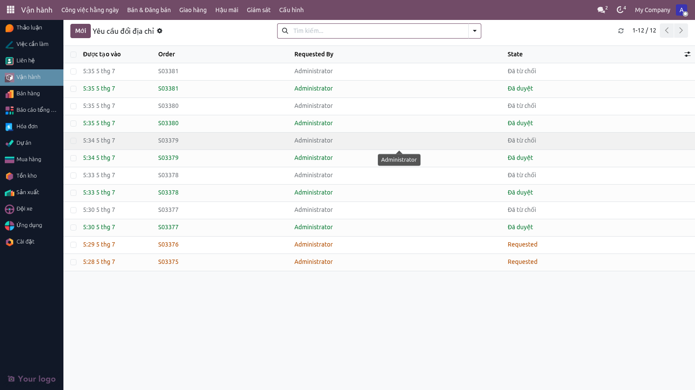
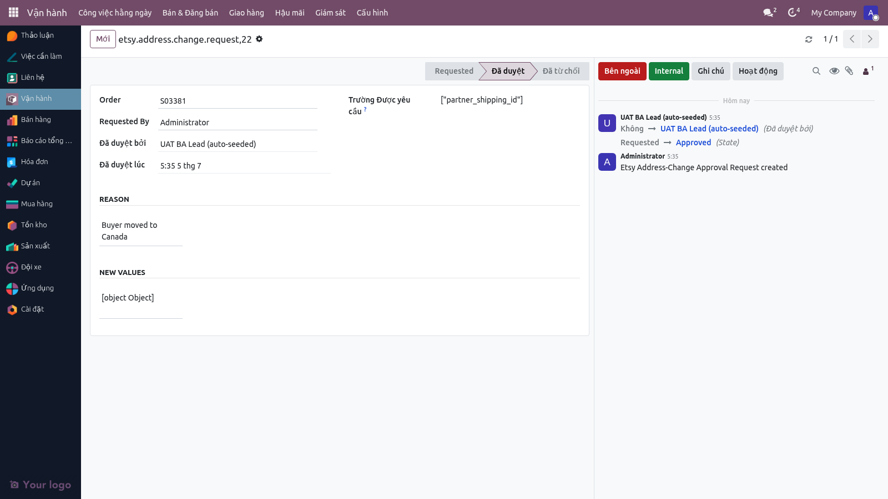
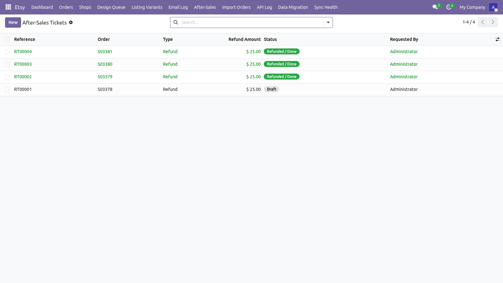
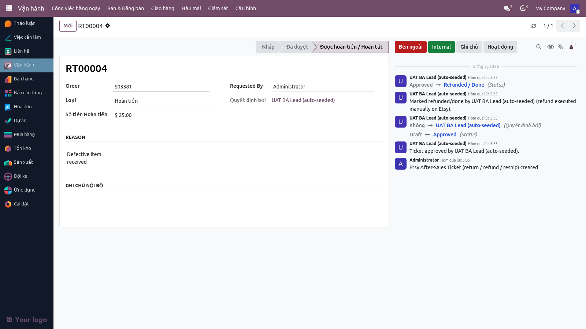

ASơ đồ vai trò (Swimlane)
Bước 1 — Ghi chú khách tới Chatter SO
Menu: Vận hành ▸ Hậu mãi ▸ Chăm sóc sau bán (After-Sales Service)
Khách ghi chú trên Etsy hoặc nhắn tin/email. Hệ thống tự động lấy ghi chú từ Etsy và hiển thị trên Chatter của Sale Order. BA có thể:
- Xem ghi chú: Tab "Chatter" trên SO form
- Trả lời: Ghi lại ghi chú trực tiếp trên Chatter để khách thấy
- In lại nếu cần: Nếu khách yêu cầu "bản in khác" (ví dụ "lớn hơn"), tạo một SO mới in lại (không tính tiền khách, chỉ lấy chi phí in từ margin cũ)

Bước 2 — Yêu cầu đổi địa chỉ (Address Change)
Menu: Vận hành ▸ Hậu mãi ▸ Yêu cầu đổi địa chỉ
Nếu khách muốn thay đổi địa chỉ giao hàng trước khi hàng được gửi:
- Khách ghi chú "Thay đổi địa chỉ" trên Etsy
- BA mở menu "Yêu cầu đổi địa chỉ" → Chọn SO → Tạo phiếu (address-change ticket)
- Nhập địa chỉ mới, lý do thay đổi, yêu cầu đặc biệt
- Phiếu được gán trạng thái "Pending Approval"
- Trưởng nhóm hoặc BA Lead xem xét & approve
- Nếu approve: Cập nhật địa chỉ trên SO, tạo picking mới (nếu in nội bộ) hoặc yêu cầu báo giá lại (nếu Gearment)
- Nếu reject: Ghi chú lý do từ chối, BA trả lời khách


Bước 3 — Phiếu đổi/trả/hoàn tiền (Return/Exchange/Refund)
Menu: Vận hành ▸ Hậu mãi ▸ Phiếu đổi/trả/hoàn
Nếu khách không hài lòng với sản phẩm (hỏng, sai, không đúng ý) hoặc muốn trả hàng:
- Khách yêu cầu hoàn/trả qua Etsy message hoặc khác
- BA tạo Return Ticket → Chọn loại: Return (trả hàng), Exchange (đổi hàng), hoặc Refund (hoàn tiền)
- Ghi lý do (ví dụ: "Hỏng góc in", "Sai size", v.v.)
- Phiếu được gán trạng thái "Pending Approval"
- Trưởng nhóm xem xét:
- Nếu Accept: Tạo Credit Note (hoàn tiền), hoặc tạo SO mới (đổi hàng)
- Nếu Reject: Ghi chú từ chối + trả lời khách
- Nếu là Return (trả hàng), BA có thể tạo Return Shipment để khách gửi hàng lại (tùy chọn)


Bước 4 — In lại (Re-print)
Menu: Vận hành ▸ Hậu mãi ▸ Phiếu đổi/trả/hoàn → Chọn "Exchange" type
Nếu khách chọn đổi hàng (exchange) thay vì hoàn tiền:
- BA tạo SO mới (duplicate của SO cũ) với cùng sản phẩm và địa chỉ mới (nếu đổi)
- Tính giá: Nếu là lỗi của Hatafa (in sai), không tính tiền thêm. Nếu là yêu cầu upgrade (kích thước lớn hơn), tính thêm giá chênh lệch
- Xử lý SO mới như một đơn bình thường (in lại, gao, gửi)
- Ghi lại trên SO cũ: "Đã đổi → SO# mới"
Bước 5 — Ghi chú quan trọng: Đổi địa chỉ TRƯỚC giao hàng vs SAU giao hàng
Thời điểm quan trọng:
- Trước giao hàng (SO chưa done): Đổi địa chỉ rất dễ — chỉ cần edit trực tiếp trên SO hoặc tạo phiếu đổi địa chỉ. Nếu đã in, in lại là option (tính thêm chi phí hoặc không).
- SAU giao hàng (SO đã done): Đổi địa chỉ khó hơn — khách phải gửi hàng lại, rồi BA tạo SO mới in lại. Tính chi phí hoàn trả + in lại.
Nếu giao qua Gearment (dropship), Gearment gửi trực tiếp tới khách. Nếu khách ghi chú đổi địa chỉ TRƯỚC khi hàng gửi từ Gearment, BA phải yêu cầu Gearment hủy/chỉnh sửa. Nếu ĐÃ gửi, khách phải liên hệ Gearment/bưu vận trực tiếp (Hatafa không can thiệp được).
iGhi chú cho BA & Trưởng nhóm
- Ghi chú khách (Buyer note từ Etsy) tự động hiển thị trên Chatter SO. Không cần copy-paste thủ công.
- Yêu cầu đổi địa chỉ cần duyệt (approve) trước khi cập nhật. Để tránh lỗi input, hệ thống yêu cầu BA Lead xác nhận.
- Phiếu đổi/trả/hoàn tương tự — cần duyệt trước. Nếu reject, ghi chú rõ lý do để BA trả lời khách.
- In lại là hành động kinh tế — cần tính toán chi phí. Nếu lỗi của Hatafa, không tính tiền khách. Nếu khách yêu cầu nâng cấp (kích thước, chất liệu tốt hơn), tính thêm giá chênh lệch.
- Hoàn tiền (refund) tạo Credit Note — khách có thể dùng để mua hàng khác, hoặc yêu cầu hoàn tiền thực tế (tùy policy).